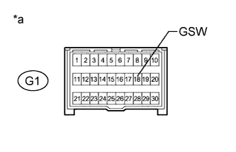

DTC B1243 GSW Terminal Circuit Malfunction |
| DTC Code | DTC Detection Condition | Trouble Area |
| B1243 | Either condition is met:
|
|
| Condition | Waiting Time |
| Vehicle enrolled in G-BOOK system | 6 minutes |
| Vehicle not enrolled in G-BOOK system | 1 minute |
| 1.CHECK FOR DTC |
Clear the DTCs (Click here).
Check for DTCs (Click here).
| Result | Proceed to |
| DTC B1243 is output | A |
| DTC B1243 is not output | B |
|
| ||||
| A | |
| 2.CHECK HARNESS AND CONNECTOR (MAIN BODY ECU - CENTER AIRBAG SENSOR) |
Disconnect the cable from the negative (-) battery terminal.
Remove the main body ECU (Click here).
Disconnect the G1 center airbag sensor connector.
Measure the resistance according to the value(s) in the table below.
| Tester Connection | Condition | Specified Condition |
| G1-18 (GSW) - A-24 (GSW) | Always | Below 1 Ω |
| G1-18 (GSW) - Body ground | Always | 10 kΩ or higher |
|
| ||||
| OK | |
| 3.CHECK MAIN BODY ECU (GSW VOLTAGE) |
|  |
Disconnect the cable from the negative (-) battery terminal.
Disconnect the G1 center airbag sensor connector.
Connect the cable to the negative (-) battery terminal.
Measure the voltage according to the value(s) in the table below.
| Tester Connection | Switch Condition | Specified Condition |
| G1-18 (GSW) - Body ground | Engine switch on (IG) | 4.5 to 5.5 V |
| *a | Front view of wire harness connector (to Center Airbag Sensor) |
|
| ||||
| OK | ||
| ||